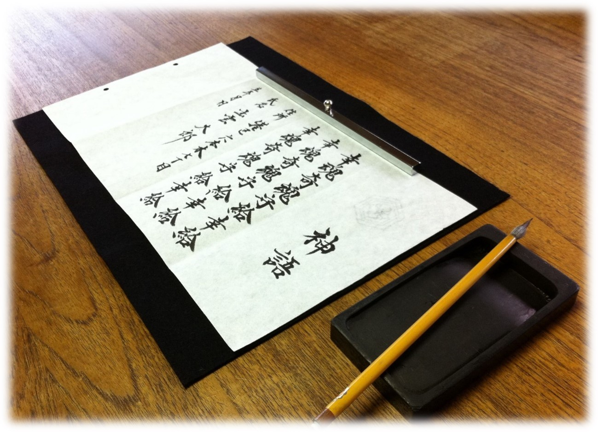
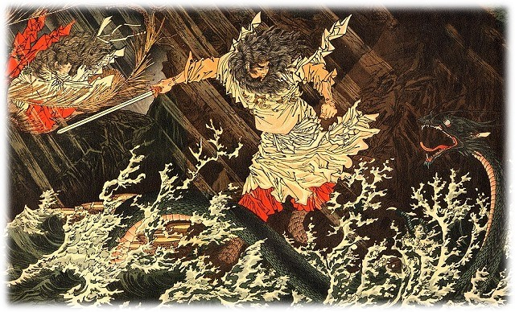
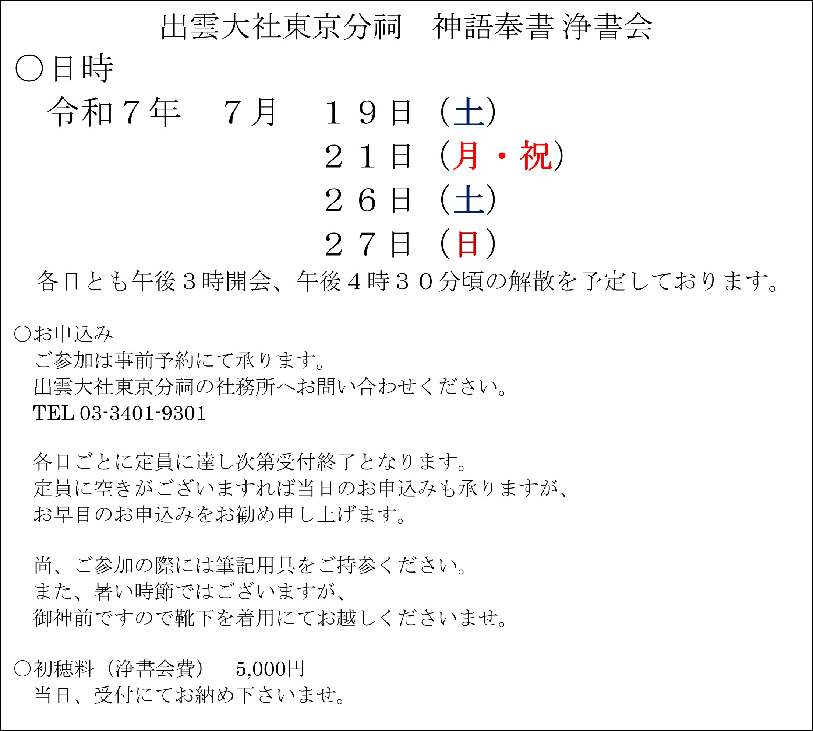
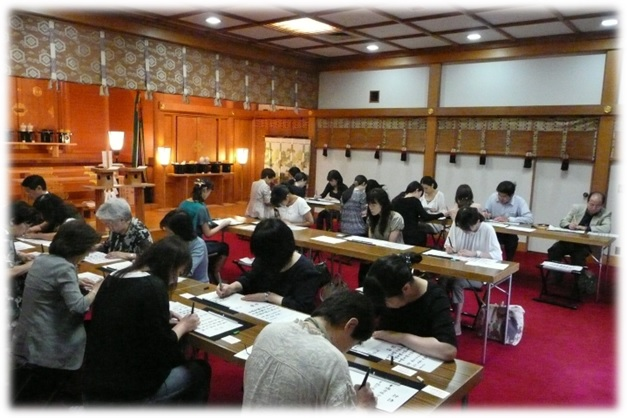

神語奉書浄書会のご案内
神語奉書浄書会のご案内
投稿日: 2025.05.15
神語奉書浄書会のご案内
投稿日: 2025.5.15
   

新 着 情 報
神語奉書 浄書会
のご案内
大神様の御恵みによって生かされ、ご先祖様から受け継いだ
を宿す我々は、常に
からの慈愛に寄り添われて日々の暮らしの中に在ります。
”海の日”を仰ぐ盛夏の候に「
」の神語の祈りに思いを深め、心清々しく和楽の恵みに結ばれますよう浄書会のご案内を申し上げます。
月岡芳年 / 素戔嗚尊出雲の簸川上に八頭蛇を退治したまふ図
浄書の後の講話では、今回は「海の日」とその前後の開催であることに
みまして、
大国主大神さまの
さまと仰ぎます
素戔嗚尊
さまについて、お話をさせていただきます。
出雲の地で
八岐大蛇
を退治なされた神話で著名な、素戔嗚尊さま。
その神格について理解を深めることは、出雲の信仰の淵源に迫ることにも繋がろうかと存じます。皆様方のご参加をお待ち申し上げております。
皆様が浄書なされました神語奉書は大切にお預かりして、宗祠と仰ぎます島根県の出雲大社にて、神楽殿の御神前へお供え致します。
神前にお供えされた後は、出雲大社神楽殿の神殿至近にございます「神語奉書奉納殿」へお納め致しまして、永く大切に保管されます。
お問い合わせ
出雲大社東京分祠
〒106-0032 東京都港区六本木7-18-5
TEL: 03-3401-9301
受付時間: 午前9時～午後5時
お問い合わせ
出雲大社東京分祠
〒106-0032 東京都港区六本木7-18-5
TEL: 03-3401-9301
受付時間: 午前9時～午後5時